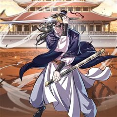

무협 사이다·참교육 웹툰 추천 TOP 30
무협 작품 중에서 사이다, 참교육, 인생역전, 다크히어로 같은 요소가 들어간 작품만 골랐어요. 네이버웹툰·카카오웹툰·레진코믹스에서 조건에 맞는 작품 44개 중 인기 순으로 30개를 골랐어요. 인기 TOP 3: 무림세가 천대받는 손녀 딸이 되었다, 나노마신, 비뢰도
2026-09-29 기준 · 성인 작품 제외
내 취향으로 더 좁혀서 추천받기 →-
1
 카카오웹툰
카카오웹툰무림세가 천대받는 손녀 딸이 되었다
무협지 속 세상으로 빙의한 주인공. 남주인공을 영웅의 길로 이끄는 참스승이자 완전체, 백리의강의 어리석은 민폐딸 백리연으로 빙의한다. 뜻밖의 죽임을 당하고, 눈을 떠보니 모든 것을 되돌릴 수 있는 아이 때로 회귀하는데. "나, 이번엔 사랑받을 수 있는 거야?" 이번 생에서는 민페딸이…
무협사이다로판육아물카카오웹툰에서 보기 → -
2
 네이버웹툰
네이버웹툰나노마신
갖은 멸시와 목숨의 위협을 받던 마교의 사생아 천여운, 미래에서 나타난 후손이 천여운의 몸에 나노 머신을 주입한 후 그의 인생이 송두리째 바뀐다. 마교를 넘어 무림 최고의 자리에 오르기 위한 천여운의 거침없는 이야기가 시작된다!
무협사이다참교육레드아이스 스튜디오천마네이버웹툰에서 보기 → -
3
 카카오웹툰
카카오웹툰비뢰도
홀로 길러주신 아버지를 잃고 10세에 혈혈단신이 된 비류연. 조각가였던 아버지에게 배운 기술로 부모님의 조각상을 만들어 두 분 묘 앞에 세워뒀더니, 지나가던 노인이 그걸 보고는 천하제일 무공을 가르쳐주겠다고 한다. 수상쩍지만 달리 갈 곳도 없고, 그럴듯해 보인 무공에 혹해 비류연은 그…
무협사이다개그액션캠퍼스카카오웹툰에서 보기 → -
4
 카카오웹툰
카카오웹툰무당기협
무림 사파의 수장인 혁련무강은 죽기 직전 불로초를 삼킨 후 눈을 떠보니 무당파 도동의 몸에 빙의되었다. 예전에 본인이 붕괴 직전까지 몰고 갔던 무당파에서 '진무'라는 이름의 도사로 다시 살게 된 그는 무당의 '양의신공'을 전수받기 위해 애쓰다 보니 뜻하지 않게 무당이 부흥하는데...!
무협사이다액션빙의카카오웹툰에서 보기 → -
5
 네이버웹툰
네이버웹툰광마회귀
무공에 미친 광마 이자하. 그는 마교 교주의 천옥을 훔쳐 쫓기던 중 벼랑에서 떨어지게 된다. 모든 게 끝났다고 생각한 순간 눈을 떠보니, 사람들에게 무시당하던 점소이 시절로 돌아와 있는데... 게다가 억울한 누명으로 두들겨 맞고 객잔은 박살이 나 있는 상황. 점소이 시절로 회귀한 광…
무협사이다세계관회귀판무네이버웹툰에서 보기 → -
6
 카카오웹툰
카카오웹툰묵향 다크레이디
마교의 교주로서 극강의 무공을 자랑하던 묵향은 적들(혈교)에 의해 생전 처음 보는 생소한 이세계(판타지 세계)로 떨어지게 된다. 그곳에서 엘프, 마법사, 기사, 드래곤 등 새로운 존재들과 만나며... 무림 최고수 묵향이 원래 자신의 세상(무림)으로 돌아가기 위해 긴 모험을 떠나게 된다…
무협사이다학원물카카오웹툰에서 보기 → -
7
 네이버웹툰
네이버웹툰절대회귀
"나를 과거로 보내주시오." 이 시대에서 그를 죽일 수 없다면, 과거로 돌아가면 되리라. 시간을 거스를 수 있는 '회귀대법(回歸大法)'으로 그토록 원하던 과거로 회귀한 한 남자. 가족도, 친구도, 삶도, 모두 잃었던 '검무극(劍無極)'의 복수를 위한 첫걸음이 시작된다.
무협참교육미친작화무협/사극고인물네이버웹툰에서 보기 → -
8
 카카오웹툰
카카오웹툰블랙기업조선
밀리터리, 스팀펑크 등등 온갖 덕질에 미친 잡덕후가 환생했다. 그런데 아버지가 세종대왕? 덕질에 능한 군주와 덕질에 미친 아들, 그리고 갈려 나가는 대신들과 수많은 인간들. 오늘도 조선의 밤은 야근의 불빛이 가득하다.
무협사이다정치카카오웹툰에서 보기 → -
9
 네이버웹툰
네이버웹툰장씨세가 호위무사
‘당신이 부른 것이오. 나란 사람을... ’ 은둔고수 광휘. 호위무사 되다. 웹소설 원작 웰메이드 무협 시대극!
무협사이다무협/사극힘숨찐판무네이버웹툰에서 보기 → -
10
 카카오웹툰
카카오웹툰말단 후궁의 딸로 태어났습니다
눈 떠보니 옹주였다. 교통사고를 당하고 눈을 떠보니 사극 같은 세계 속의 아기 옹주가 되어 있던 시아. 다행히 왕실에서 태어나 먹고살 걱정은 없겠다고 생각했던 것도 잠시, 비어있는 중전 자리를 차지하기 위한 궁중암투가 시아를 덮쳐온다! “빼애애앵!! (나를 엄마와 함께 조용히 살게 내…
무협사이다환생카카오웹툰에서 보기 → -
11
 네이버웹툰
네이버웹툰환생천마
철혈의 맹주, 강호의 절대자 '천하진'. 가문의 수치라 불리는 망나니 '벽리단'의 몸으로 깨어나다! 취미는 사기도박, 검은 창고에 박아둔지 오래. 하루아침에 천하제일인에서 천하의 쓰레기가 된 그는 다시 검을 잡고, 전생에서 이루지 못한 경지에 오르고자 한다.
무협사이다천마동양환생네이버웹툰에서 보기 → -
12
 네이버웹툰
네이버웹툰권왕환생
주먹 하나로 무림을 누빈 남자 단우성. 갑작스레 마도에게 죽음을 맞이하고, 돈 많은 은하상단의 대공자의 몸에서 다시 눈을 뜨다. “나는 은원에서 자유롭길 바라지 않아. 은혜가 있으면 갚고, 원한이 있어도 갚아줘야지.” 가진 것이라고는 돈밖에 없는 대공자 몸이지만, 압도적인 재력과 전생…
무협사이다환생액션세계관네이버웹툰에서 보기 → -
13
 카카오웹툰
카카오웹툰마존현세강림기
첫 번째 삶. 불의의 사고로 가족과 두 다리를 잃고 스스로 목숨을 끊었다. 두 번째 삶. 중원에서 적천마존이라는 명성을 얻었지만 가장 신뢰하던 이에게 배신당해 죽게 됐다. 그리고 맞게 된 세 번째 삶. 다시 돌아온 현대에서 강진호 자신은 평범한 삶을 살 거라 다짐하지만... 평범한 인…
무협사이다개그학원물회귀카카오웹툰에서 보기 → -
14
 카카오웹툰
카카오웹툰무림에 떨어진 현대인
생존을 위해 아르바이트를 하는 만년 공시생인 나. 한밤중 배달을 하다 과속하던 차에 쓰러졌다. 뺑소니로 요절했던 죽음의 기억이 강렬한데, ‘……내가 조휘?’ 어느 순간 다 쓰러져 가는 조가철방의 차남이 되었다. 날아가는 새를 떨어뜨릴 권세도, 의지를 관철시킬 무력도 없다. 일가족을 몰…
무협사이다액션게임판타지카카오웹툰에서 보기 → -
15
 카카오웹툰
카카오웹툰월령검제
"개 같은 인생이었네… 정말로." 암투가 판치는 마교에서 살아남아 천마의 제자가 됐건만, 결국 사형에게 배신당해 죽음을 맞이한 연소운. 그런데, 눈을 떠보니 마교에 끌려가기 전인 꼬맹이 시절이다?! 지옥 같은 마교의 삶을 반복하기 싫었던 연소운은 새로운 인생을 설계한다. 마교에 복수하…
무협사이다액션회귀카카오웹툰에서 보기 → -
16
 네이버웹툰
네이버웹툰천하제일 대사형
잔혹했던 정사대전에 반 강제적으로 끌려갔던 대사형 ‘혁무상’. 수많은 피가 흐른 전쟁에 참전한지 7년. 전쟁은 진즉 끝났음에도 돌아오지 않아 죽은 줄 알았다. 간신히 고향 땅을 밟은 혁무상이 보게 된 것은, 고작 삼류 흑도에게 핍박당해 무너져가는 고향 용호무관의 모습. 분노에 찬 혁무…
무협사이다참교육환골탈태판무네이버웹툰에서 보기 → -
17
 카카오웹툰
카카오웹툰천하제일 의뢰문
“드디어 자유다!” 십오 년만의 하산, 지난 세월 동안 헛되이 보낸 청춘을 보상 받기 위해 세상에 나섰다. 하산하며 사부와 약속했던 십행을 하루 빨리 해결한 뒤 한평생 즐기면서 살아가기로 마음 먹고 자신만만하게 첫발을 내디뎠지만 어째 처음 예상과는 달리 일은 점점 꼬여만 가는데…. 도…
무협사이다개그액션성장물카카오웹툰에서 보기 → -
18
 네이버웹툰
네이버웹툰황제의 검
정난의 변에서 간신히 살아난 주윤문, 마교 천하제일 천마(天魔)와 소림사 육조 혜능(慧能)을 몸 안에 받아 천마서생 '파천'으로 재탄생하게 되는데… 절대지존을 향한 파천의 새로운 이야기가 시작된다!
무협참교육서양동양신화네이버웹툰에서 보기 → -
19
 네이버웹툰
네이버웹툰사상최강
‘천하 십대 고수’라고 불리는 자들. 인간의 한계를 뛰어넘은 그들은 서로를 견제하며 힘의 균형과 세상의 질서를 유지해왔다. 바로 ‘백도현’ 그가 나타나기 전까지는! 내공만으로 사상최강의 힘을 가진 남자 백도현의 시원한 한 방!
무협사이다정통무협동양로맨스네이버웹툰에서 보기 → -
20
 카카오웹툰
카카오웹툰천검기협
무림의 환란을 막기 위해 초절정고수에서 초고도비만으로 타임슬립+빙의한 개망나니 진위강, 아니 유현. 환란의 원흉인 '환란의 주구'를 찾아내 숨통을 끊어 놓아야 하거늘 사랑 듬뿍 받고 자라 걷지도 못할 만큼 육중해진 몸에 빙의한 덕에 제 숨통 유지가 만만치 않은 지경이다. 더 큰 문제는…
무협사이다개그액션빙의카카오웹툰에서 보기 → -
21
 카카오웹툰
카카오웹툰창천무신
"이 기생오라비처럼 생긴 놈은 뭐지?" 천하제일로 군림하던 최강의 무인! 나, 독패 하후영. 나를 상대할 자는 무림 어디에도 존재하지 않는다! 더는 지상에서 이룰 성취가 없자 허무와 공허가 나를 잠식했다. 무의 끝, 극의를 이루기 위해서는 신선이 될 수밖에! "마침내 성공했다아아아!!…
무협사이다개그액션환생카카오웹툰에서 보기 → -
22
 카카오웹툰
카카오웹툰은해상단 막내아들
『은해상단 막내아들』 천하제일의 상재(商才)를 타고난 은서호. “어째서 무림맹이 나를…….” “맹의 윗분들께서 자네가 거슬린다고 하더군. 쯧, 그놈의 돈이 뭐라고.” 백도 무림을 자처하던 무림맹의 칼에 살해당한 나는 상단 일을 처음 배우던 날로 돌아왔고, 굳게 다짐한다. 이번 생에서는…
무협사이다눈물샘자극액션회귀카카오웹툰에서 보기 → -
23
 카카오웹툰
카카오웹툰검은머리 미군 대원수
1910년대로 회귀한 인생 2회차 김유진, 미래 지식으로 역사를 휘어잡다. 언덕을 굴러 내려오는 레토나로부터 아이를 구하려다 죽음을 맞이한 한국인 중대장. 정신을 차려 보니 미래 지식을 가진 채 1900년대 재미 조선인 김유진으로 회귀하고 말았다. 미래를 아는 자, 재벌이 될 것인가,…
무협사이다개그액션환생카카오웹툰에서 보기 → -
24
 카카오웹툰
카카오웹툰환생마신전
소천마(少天魔) 연운휘(燕雲輝). 이능만으로 천마신교 소교주가 된 존재. 파란만장하던 그가 부교주와 장로들의 반란에 직면한다. [ 날 죽일 때 죽이더라도 내가 어떤 놈인지는 떠올려야 하셨소,사숙. 그러니까 다 뒈져라! ] 반란자들과 함께 장렬히 산화하고 생각지도 못한 곳에서 눈을 뜨게…
무협사이다액션환생카카오웹툰에서 보기 → -
25
 네이버웹툰
네이버웹툰신마 환생
강호에 피바람을 몰고 온 전설적인 존재, 신마 정천. 그의 이름만으로도 무림은 공포에 떨었고, 그의 검은 하늘을 갈랐다. 구대문파의 정예 무사들, 그 누구도 그의 적수가 되지 못했다. 천하를 뒤흔들던 그의 무위는 신화로 전해졌으나, 결국 그는 모든 이의 예상을 깨고 죽음에 이르렀다.…
무협사이다액션동양풍판타지회귀네이버웹툰에서 보기 → -
26
 카카오웹툰
카카오웹툰괴공유록
불의의 사고로 의식을 잃었다가 잠에서 깼을 땐, 삼십 년이란 세월이 훌쩍 지난 뒤였다. 그 사이 사문인 백검문은 쇠락의 길을 걷다 무림 세력에게 멸문지화를 당했으며 사형이자 장문인이었던 진영림이 비명 했다는 비보를 듣게 되는데… 존재 자체만으로도 강호 무림이 숨을 죽인 존재였던, 검공…
무협사이다미스터리액션복수극카카오웹툰에서 보기 → -
27
 카카오웹툰
카카오웹툰용사파티 대마법사의 환생
천재마법사 린은 13살 때, 세상을 혼돈에 빠뜨리려는 거악 ‘심연’을 물리치고자 리스타를 위시한 용사파티와 함께 여행을 떠난다. 하지만 싸움은 점점 격렬해지고 마지막 순간에 린의 몸은 ‘심연’의 암독에 당해서 생명이 위태로워진다. “다시 돌아올게”라는 말을 남기고 강제 휴면 상태에 빠…
무협사이다환생카카오웹툰에서 보기 → -
28
 카카오웹툰
카카오웹툰남궁세가 천재 외손자
멸문지화의 재앙이 고작 열 살인 하현에게 닥쳤다. 집안도, 가족도 모두 잃고 홀로 간신히 살아남아 도착한 남궁세가에서 하현은 외할아버지 ‘검존 남궁무룡’에게 말한다. “더는 소중한 것을 잃고 싶지 않습니다.” 절망적인 상황에도 곧은 심성으로 정도를 걸으려 하는 하현의 뜻을 본 남궁무룡…
무협사이다액션성장물카카오웹툰에서 보기 → -
29
 카카오웹툰
카카오웹툰천마 객잔
어느 날, 무림에 떨어진 이방인 주강현. 천신만고 끝에 천마에 자리에 오른다. 하지만 그는 늘 자신의 고향인 21c 대한민국을 그리워했다. 진법이 발동되고 고향으로 돌아갈 줄 알았는데 오히려 과거로 회 귀를 해버렸다. 이런 ㅆ... 영래 객잔. 무림에 처음 떨어졌을 때 자신을 돌봐줬던…
무협사이다개그액션회귀카카오웹툰에서 보기 → -
30

카카오웹툰무림맹주 막내제자
무림 최강 천하십수이자 호정단주, 이환! 임무 중 마교의 혼세신마 등광천과 싸우다 정신을 잃게 되는데……. 눈 떠보니 여긴 우리 집? …아니, 어린 시절 우리 집이잖아? 믿기지 않지만, '만일 진짜 과거로 돌아온 거라면, 이번에는 그냥 당하지 않는다!' 그렇게 열일곱 살에 맞이한 팔월…
무협사이다성장물액션카카오웹툰에서 보기 →